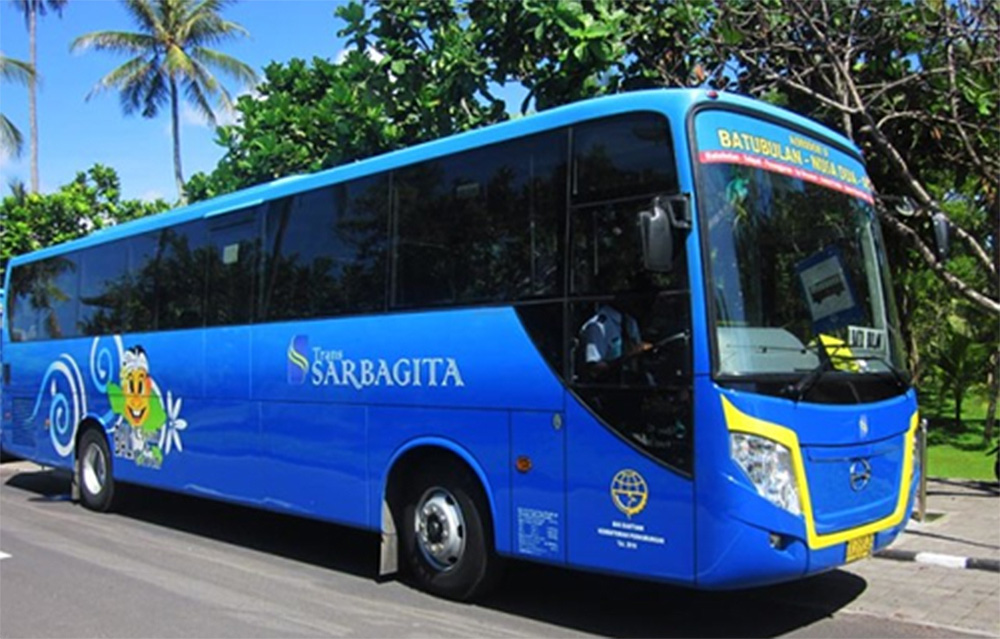
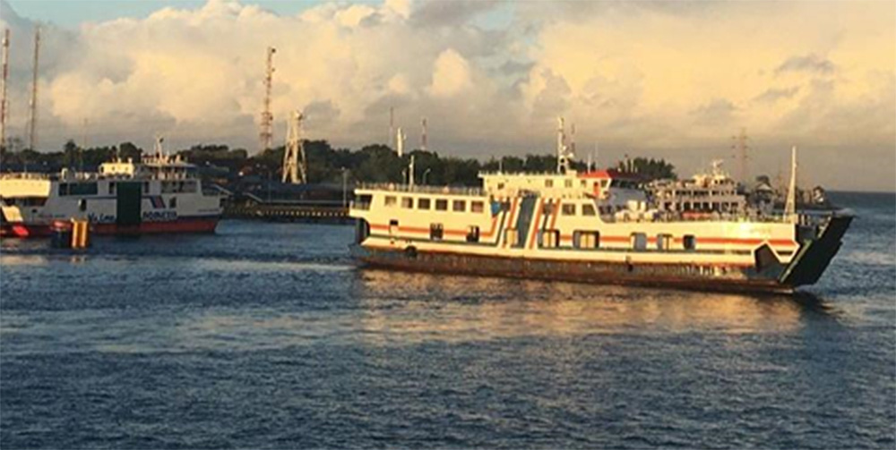
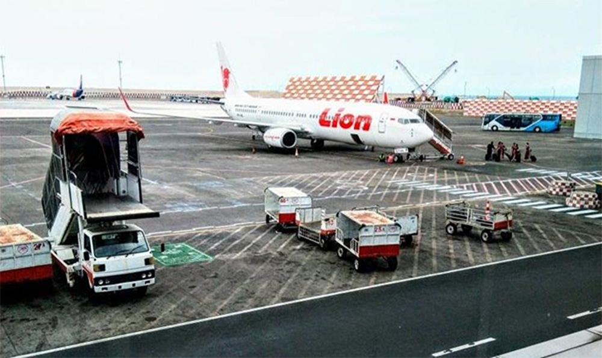

Bali tidak memiliki jaringan rel kereta api namun jaringan jalan yang ada di pulau ini tergolong sangat baik dibanding daerah-daerah lain di Indonesia, jaringan jalan tersedia dengan baik khususnya ke daerah-daerah tujuan wisatawan yakni Legian, Kuta, Sanur, Nusa Dua, Ubud, dll. Sebagian besar penduduk memiliki kendaraan pribadi dan memilih menggunakannya karena moda transportasi umum tidak tersedia dengan baik, kecuali taksi dan angkutan pariwisata. Moda transportasi massal saat ini disiapkan agar Bali mampu memberi kenyamanan lebih terhadap para wisatawan. Baru-baru ini untuk melayani kebutuhan transportasi massal yang layak di pulau Bali diluncurkan Trans Sarbagita (Trans Denpasar, Badung, Gianyar, Tabanan) menggunakan bus besar dengan fasilitas AC dengan tarif Rp 3.500.

Jenis kendaraan umum di Bali antara lain:
1. Dokar, kendaraan dengan menggunakan kuda sebagai penarik dikenal sebagai delman di tempat lain.
2. Ojek, taksi sepeda motor (sebagian sudah berbasis di intenet).
3. Bemo/angkot, melayani dalam dan antarkota.
4. Bus Trans Sarbagita (Koridor 1 < Kota - Garuda Wisnu Kencana (GWK) >) dan (Koridor 2 < Nusa Dua - Batubdivan>).
5. Taksi (sebagian sudah mempunyai apdivkasi di smartphone).
6. Komotra, bus yang melayani perjalanan ke kawasan pantai Kuta dan sekitarnya.
7. Bus, melayani hubungan antarkota, pedesaan, dan antarprovinsi.
Bali terhubung dengan pulau Jawa dengan layanan kapal feri yang menghubungkan Pelabuhan Gilimanuk di kabupaten Jembrana dengan Pelabuhan Ketapang di Kabupaten Banyuwangi yang lama tempuhnya sekitar 30 hingga 45 menit saja. Penyeberangan ke Pulau Lombok melalui Pelabuhan Padangbai menuju Pelabuhan Lembar yang memakan waktu sekitar empat sampai lima jam lamanya tergantung cuaca.

Transportasi udara dilayani oleh Bandara Internasional Ngurah Rai dengan destinasi ke sejumlah kota besar di Indonesia, Australia, Singapura, Malaysia, Thailand, Timor Leste, RRC serta Jepang. Landas pacu dan pesawat terbang yang datang dan pergi bisa terlihat dengan jelas dari pantai dan menjadi semacam hiburan tambahan bagi para wisatawan yang menikmati pantai Bali.

Untuk transportasi darat antar pulau di bali ada terminal Ubung-Denpasar dan terminal Mengwi yang menghubungkan pulau Bali dengan Pulau Jawa dan Pulau Lombok. Terminal Ubung di pulau Bali ini melayani berbagai rute antar pulau tujuan Jakarta, Bandung, Semarang, Yogyakarta, Surabaya, Malang, Madura, Jember, dll. Angkutan antar pulau dilayani oleh armada bus besar dengan kelas ekonomi, bisnis dan eksekutif. Terminal Ubung relatif ramai mulai pukul 15.00 - 18.00 WITA karena pada jam tersebut banyak bus yang mulai berangkat ke kota tujuan masing-masing. Bagi anda yang datang ke terminal ini harap waspada karena banyak calo tiket yang agak memaksa penumpang.